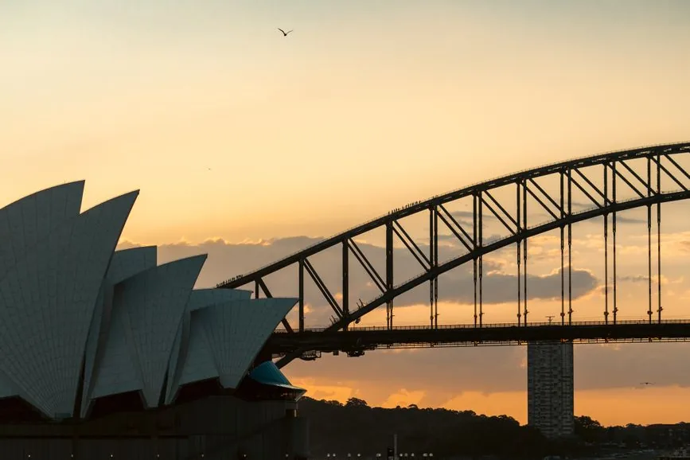

In this guide8 sections
- 1. Whale watching — the one with a real season
- 2. Dinner cruises — a restaurant that moves slowly
- 3. Sunset and sightseeing cruises — the best value in the harbour
- 4. The Aboriginal cultural cruise — the one people don’t know exists
- 5. The Manly ferry — the cruise that isn’t sold as one
- How to choose, in one paragraph
- Practical notes before you book
- Frequently asked questions
Answer first, because the booking sites won’t tell you this: there is no single best Sydney cruise — there are five different products wearing the same word. A whale-watching boat leaves the harbour entirely and heads into open ocean. A dinner cruise barely moves and is really a restaurant with a view. A cultural cruise is a history lesson on the water. And the cheapest “cruise” in Sydney isn’t sold as one at all — it’s a public ferry on your Opal card. Pick by what you actually want from the two hours, and Sydney Harbour is one of the great ones. Pick by price alone and you’ll be eating a lukewarm buffet while the skyline goes past a window.
Here’s each type, honestly, with the seasons and the catches.

1. Whale watching — the one with a real season
This is the only Sydney cruise where timing decides everything. The migration runs from mid-May to the end of November (the 2026 season opened on 16 May), when somewhere between 40,000 and 60,000 humpbacks pass along the New South Wales coast — north to the Coral Sea in winter, back south with calves in spring. Outside that window, no operator can show you a whale, and you should book something else entirely.
Two things nobody mentions in the listing:
- You leave the harbour. Whale cruises go out through the Heads into open ocean, which is a genuinely different sea state from the flat water inside. If you’re prone to seasickness, take something before boarding, not after, and pick a morning departure when the wind is usually lighter.
- The “guarantee” is a re-sail, not a refund. Most operators promise another trip free rather than your money back if nothing is sighted — fine if you’re in Sydney for a week, useless if you fly out tomorrow.
Departures run from Circular Quay, Rose Bay and Manly, typically two hours, with morning, afternoon and sunset options. You can compare whale-watching departures and times here, and it’s worth cross-checking a second platform — the same boat is often listed on both at different prices.
Book it if: you’re in Sydney between May and November and want the thing you can’t do at home.
2. Dinner cruises — a restaurant that moves slowly
Be clear-eyed about what this is: you are paying mostly for the view and the occasion, and the food ranges from acceptable buffet to genuinely good depending on how much you spend. The tiers are unusually well defined on Sydney Harbour, and Captain Cook Cruises — the biggest operator — is the easiest way to see the ladder:
- Sunset Dinner — around two hours, three courses. The entry point, and honestly the best value if you mainly want golden hour.
- Starlight Dinner — four courses with live music on Friday and Saturday evenings. The “occasion” option.
- Gold Dinner — a six-course degustation with matched wines. This is the one that competes with a land restaurant rather than apologising to it.
A two-hour buffet cruise timed to sunset and golden hour is the sweet spot for most visitors: you get the Opera House and the Bridge lit from the west, then the skyline coming on as you come back in. The four-hour dinner cruises sound generous but a good part of that is spent stationary.
The honest caution: avoid booking a dinner cruise for your first night if you’ve just landed from a long-haul flight. Two hours of slow movement after 20 hours in the air is how people end up asleep at the table.

3. Sunset and sightseeing cruises — the best value in the harbour
If you strip out dinner, you’re left with the thing you actually came for, at a fraction of the price. A straight sightseeing or sunset cruise covers the same water as the dinner boats — Fort Denison, Shark Island, the Opera House from below, the Bridge from underneath — without the catering markup.
This is the type I’d book for a first visit. You can see current harbour sightseeing departures, or if you’d rather explore on your own timing, self-guided audio tours pair well with the ferry option below.
4. The Aboriginal cultural cruise — the one people don’t know exists
The most distinctive thing on the water isn’t a bigger boat. It’s the Aboriginal cultural cruise with a Clark Island landing, guided by Eora Nation guides, with Dreamtime stories and traditional performance — roughly two hours.
It reframes the harbour completely. The Opera House sits on Bennelong Point, named for Woollarawarre Bennelong, a Wangal man taken by Governor Phillip’s party in 1789; Clark Island is Billong-olola. You come away seeing the same view as a place with sixty-thousand-odd years of history rather than a postcard from 1973. If you only have time for one cruise and you’ve already seen a skyline before, this is the one that will stay with you.
5. The Manly ferry — the cruise that isn’t sold as one
Here’s the trick locals use. The Manly Fast Ferry runs Circular Quay to Manly in about 20 minutes, on the Opal network (so it’s ordinary public-transport fare, tapped on with the same card as the train), and it has a licensed bar on board. The slower standard ferry takes around 30 minutes and gives you longer outside.
You get the Opera House, the Bridge, the full run past the harbour islands and out towards the Heads — the exact view the tour boats sell — for a few dollars. Sit on the right-hand side heading to Manly for the Opera House, and go back at dusk for the skyline lit up.
Our guide to getting around Sydney covers how Opal fares and the daily cap work, which is what makes this so cheap. It is not a substitute for a whale cruise or a cultural tour — but as a “see the harbour from the water” experience, it is unbeatable value and a genuinely lovely hour.
How to choose, in one paragraph
Between May and November, and never seen a whale? Whale cruise, morning departure, seasickness tablet beforehand. First visit, want the classic view? Sunset sightseeing cruise, or the Manly ferry if you’re watching money. Marking an occasion? A proper multi-course dinner cruise, not the cheapest buffet. Been to Sydney before? The Aboriginal cultural cruise. Short on time and budget? Ferry, right-hand side, at dusk.
If you’re building the wider trip around it, Sydney: the places worth your time sets out what’s genuinely worth the hours, and our first-timer’s orientation covers arrival, neighbourhoods and pacing. If you’re visiting several paid attractions in a few days, a multi-attraction pass can include a harbour cruise — do the arithmetic against what you’d actually visit before buying, as we set out in how to save money on international travel.
Practical notes before you book
- Weather is a real variable. Sydney’s harbour is sheltered, but a southerly change can turn a pleasant sunset into a cold, wet one. Bring a layer even in summer; the water is always cooler than the street.
- Departure points are not interchangeable. Circular Quay, Darling Harbour, Rose Bay and Manly are all used. Check which one your booking says — this is the single most common way people miss a boat.
- Cover the trip, not just the cruise. If your plans include the open ocean or anything active, check your policy actually covers it; you can compare travel insurance and read our honest take on when cover is worth it.
- Stay connected on the water. Harbour coverage is good, which matters for finding your wharf. If you haven’t sorted data, our eSIM guidance covers Australia, or you can set one up before you fly.
Frequently asked questions
When is whale watching season in Sydney?
Mid-May to the end of November, with the 2026 season opening on 16 May. Between roughly 40,000 and 60,000 humpback whales migrate along the New South Wales coast in that window. Outside it, no operator can show you whales.
Are Sydney dinner cruises worth it?
For the view and the occasion yes, for the food only at the upper tiers. A two-hour sunset cruise usually gives the best light for the least money, while four-hour dinner cruises spend a good portion of the time stationary.
What is the cheapest way to cruise Sydney Harbour?
The Manly ferry on an Opal card, about 20 minutes on the fast ferry or 30 on the standard one for a normal public-transport fare. It covers the same headline view as the tour boats: the Opera House, the Harbour Bridge and the run out towards the Heads.
Do Sydney whale-watching cruises get rough?
They can. Unlike harbour cruises they go out through the Heads into open ocean, which is a different sea state from the sheltered harbour. Take something for seasickness before boarding and prefer a morning departure, when conditions are typically calmer.
Which Sydney cruise is best for a repeat visitor?
The Aboriginal cultural cruise with a Clark Island landing, guided by Eora Nation guides with Dreamtime stories and traditional performance. It reframes a harbour most repeat visitors think they already know.
Sources & further reading
- Operator schedules and season dates for Sydney whale-watching cruises, 2026 season
- Captain Cook Cruises published dining tiers (Sunset, Starlight, Gold)
- Transport for NSW — Opal fares and Manly ferry services
Seasons, schedules, departure points and prices change, and weather cancels boats. Confirm details with the operator when you book. This article contains affiliate links; if you book through them we may earn a commission at no extra cost to you.
Keep reading on Gently Yonder
- Sydney: The Places Worth Your Time The Opera House and Harbour Bridge, The Rocks, Bondi and the coastal walk, Manly by ferry — what's genuinely worth the hours.
- Getting Around Sydney The Opal card and contactless fares, trains as the backbone, the harbour ferries, and the honest airport options.
- Your First Visit to Sydney A calm orientation to the harbour, the neighbourhoods, and a first-timer's rhythm that doesn't exhaust you.
- Hong Kong Harbour Cruises What a paid cruise adds when the Symphony of Lights is free from shore and the Star Ferry costs a few dollars.
- How to Save Money on International Travel The seven levers that actually move the number — paying in local currency, eSIM over roaming, flexible dates, and the pass arithmetic.
- Best eSIM for Australia (2026) How to choose an Australia travel eSIM — coverage beyond the cities, data sizing, and the honest pick for a short trip.